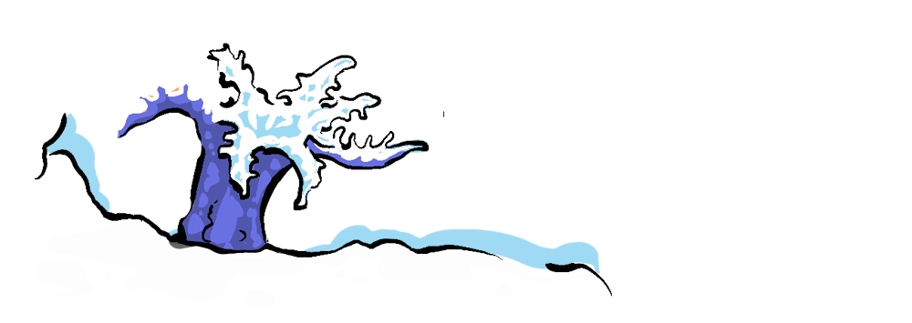

We’re all familiar with the bonds we share with our pets, those furry, feathered, or even scaly friends who bring so much joy into our lives. But thanks to the internet, we’re now treated to a treasure trove of unexpected animal friendships. Indulge me...
If I'm honest, rather than philosophy quotes, or game theory formulas, my "Insta" is populated with interspecies friendships: puppies and piglets, lemurs riding goats, cats caressing lazy lizards.
But this is not simply because I can't look away from the adorableness, these friendships give us a glimpse into the world of non-zero-sum interactions.


In the famous symbiotic relationship between the crocodile and the Egyptian plover bird, the bird picks food from the crocodile’s teeth, getting a meal while providing dental hygiene for the crocodile. Although, I have to say, most of the evidence I've seen for this relationship comes from still photos or drawings, which is a bit sus'.
The underwater realm is also adorned with many positive-sum partnerships too; remora suckerfish eat parasites off the sides of grateful sharks, the clownfish and sea anemone duo provide each other protection and nourishment, and we've already covered the symbiotic relationships of polyps in Parable of a Polyp showing how these alien creatures of the deep build thriving colonies through cooperation.

Even at the cellular level, symbiosis plays a crucial role in our existence. Our cells contain mitochondria, which originated from a symbiotic relationship where a larger cell engulfed a smaller one, leading to a mutually beneficial arrangement that’s essential for complex life.
But let’s not forget the capacity humans have to form bonds with other species. From Christian the Lion to My Octopus Teacher, this capacity in humans is unsurpassed and is, I think, one of the most beautiful aspects of humanity–an encouraging counterpoint to the more destructive effects of human activity, and something we could lean into.
I realise this post is pretty frivolous, but these relationships are a reminder of the non-zero-sum processes that have shaped our world and continue to bring us together in unexpected ways. So, it's still relevant! You know you love it. Here are some more to enjoy, and perhaps even populate your feed with.
... and this one, it's not technically interspecies, but may as well be.